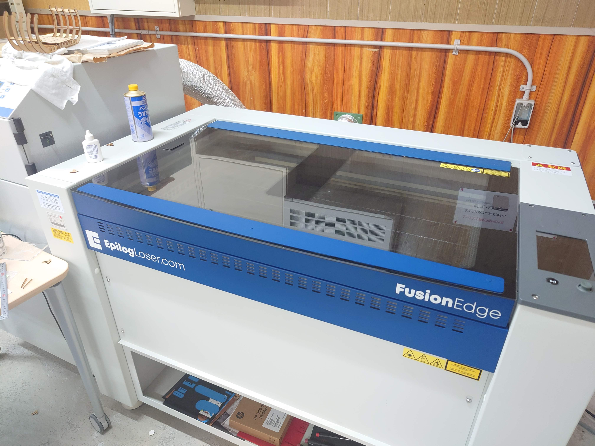

施設紹介

PRS Alpha
木材、プラスチック、アルミニウム、その他の素材のデジタル加工に最適なマシン

Epilog Fusion Edge
高性能レーザー加工機。滑らかで美しい切断面と高速高精度の彫刻が可能。

CreatBot 3D D1000
1m角の造形エリアを備えた大型3Dプリンタです。

精密卓上ボール盤
ESD350S精密卓上ボール盤。正確な穴あけ加工ができる工作機械です。

Adventurer 4
複数台の3Dプリンタで同時に造形可能。イベントや授業でも活躍中です。

Raise3D Pro3
大きな造形サイズ、多種多様なフィラメントへの対応、デュアルヘットの搭載。
その他の設備
- 切断機：金属や樹脂など様々な素材の切断に対応した機械を備えています。
- スライドマルノコ：木材の精密な切断や角度切りに活用できる電動工具です。
- 3Dスキャナ：立体物をデジタルデータ化し、3Dプリンタ等での再現や設計に利用できます。
- 電動工具：インパクトドライバー、グラインダー、ジグソーなど多様な電動工具を揃えています。
上記以外にも、ものづくりに役立つ様々な設備・工具を用意しています。